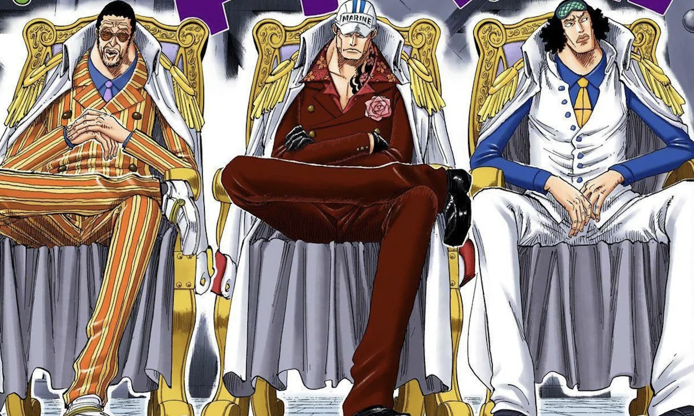
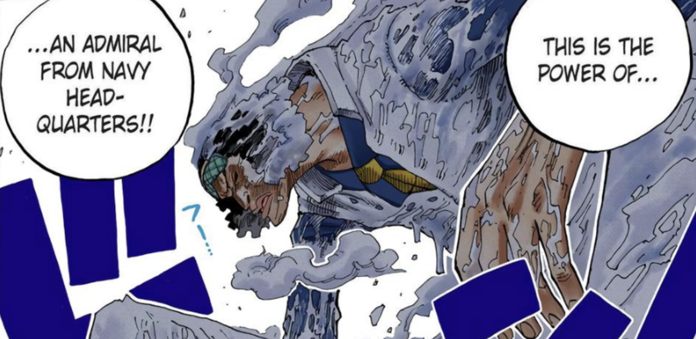
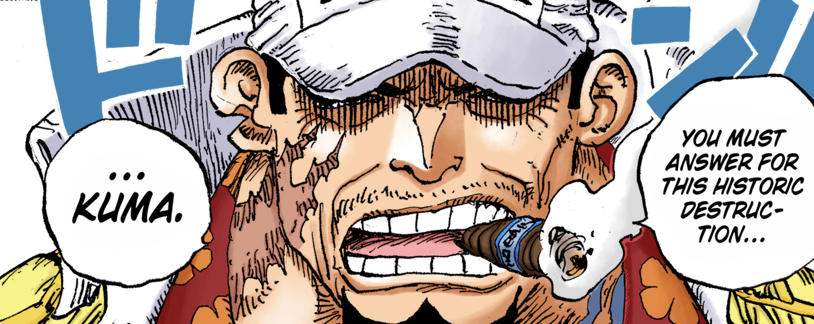
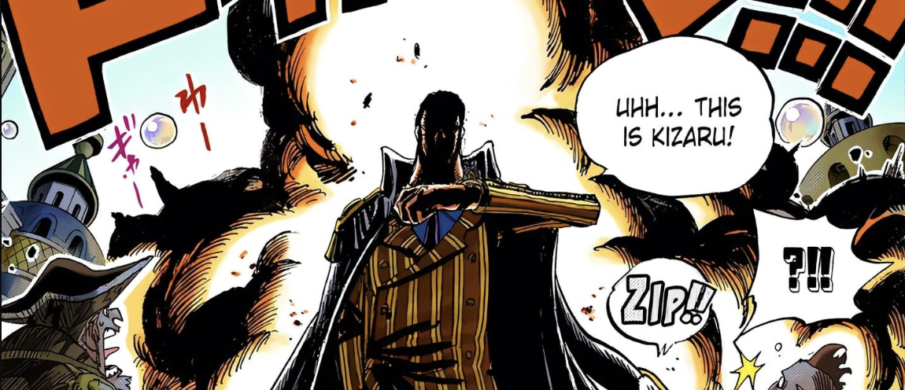

The Irony of the Admirals in One Piece
المفارقة في شخصيات الأدميرالات في ون بيس
My love for One Piece cannot be understated. For nearly a decade now, I've been reading the chapters weekly as they release, every single Saturday morning. In my personal opinion, I believe it's one of, if not the best story ever told. Alongside that, I also believe, Eiichiro Oda, is one of the greatest litterateurs to ever walk this Earth, up there with Shakespeare and Dickens, as the greatest architects of fiction.
In One Piece, few groups are as terryfyingly consistent in their dominance as the admirals. We first get introduced to them as the Navy's ultimate trump card, sitings so rare, it shook the entire power-balance of the story whenever they appeared. And, we hardly got to see them in action pre-timeskip, with the exception of Marineford (where I personally believe they were holding back significantly). But, even moreso than their strength, what makes them so fascinating to me is the poetic contrasts that Oda builds into their characters. Contraditions they wield, philosophies they hold and idealogies they fight for. If One Piece is a story centered around freedom, then the admirals are some of its most nuanced chains. You'll see what I'm trying to get at in a moment.
Aokiji: The Man of Ice with a Warm Soul
This one is almost too on the nose. Aokiji (aka Kuzan), is the user of the Ice-Ice Fruit, making him literally a man made of ice. He's cold by default. The fruit granted him the power to freeze literal oceans and immobilize opponents in an instant. And yet, knowing all of this, he is the warmest of the admirals.
His element suggests stillness and cold judgement (literally haha). But it's the complete opposite, he brings compassion, empathy, and a gentle-like sense of humor to the table. He spared Robin out of respect for her pain and what she's been through, and he let Luffy go not just out of mercy, but beceause he's able to see the bigger picture. Aokiji doesn't blindly follow anyone, time and time again he's seen questioning the actions of the World Government. To the point where he even left the Marines when the their brand became too absolute! Every Admiral has their own brand of justice, Aokiji with "lazy justice", Akainu with "absolute justice", and Kizaru with "unclear justice". Aokiji's brand, lazy justice, doesn't entail the typical definition of the word. I like to think that he is aware of what's right and wrong, and chooses the laziness as a way to forfeit particpation in unjust actions. In a way his lazy justice, becomes moral justice.
Moral Justice. I think it's a perfect descriptor for him. He's a conflicted man, searching for his truth, a sort of human justice. But, don't get it twisted, Aokiji isn't righteous, he's morally upright sure, but he's still been seen to bend the knee to powers that he knows are evil. He's the type to freeze his enemies, but hesitate before pulling the trigger. He, more than anyone else (ig besides Doflamingo) knows that not all pirates are evil, and not all marines are good. So his warmth can be found in his doubt, making it one his greatest qualities.
Akainu: The Man of Magma with a Frozen Heart
Having established what we know now about Aokiji, I think you could get guess where I'm going with this one, could not be more obvious. Akainu (aka Sakazuki) is the man of magma. The Magma-Magma Fruit is pure, destructive heat. He can vaporize icebergs, melt battleships, and he blew off half of Whitebeards face :(. You'd expect him to be a warm, passionate, almost romantic type of figure, but instead he's probably the coldest man in the series.
This is as poetic as it can get. Akainu doesn't burn with emotion or feelings, he burns with ideology. Like I touched on previously, his justice is absolute. Ruthless. Unforgiving. We are literally talking about the guy who executes his own men for retreating. The man who killed Aced because "evil MUST be purged". Now, I understand that it's his job, and that the World Government ordered Ace's Execution, but what I'm getting at is that Akainu was literally unable to see the bigger picture for even a second. Opposite to Aokiji, Akainu blindly follows orders as if he's a machine created with a single purpose. So the magma isn't a metaphor for his power, although he is definitely up there with the strongest in the verse (my guess is top 5 as of ch. 1155), it's a warning. When justice gets too hot, it can consume everything around you.
What I think makes Akainu so interesting is that he doesn't really act out of mailce. Now I now that sounds contradictory to everything I just said, but stay with me now (if ykyk haha). But I believe Akainu acts out of duty. In a world as wild as One Piece, filled with chaos, pirates, revolutionaries, ancient weapons, secrete histories, and so much more, Akainu has found for himself a single, unbreakable truth. Order must be preserved. Even if the methods are cruel, even if it's at the cost of his own men, and even if innocents suffer. Akainu is the man of order.
Going back to when he killed Ace (ik im sorry), Akainu saw it as absolutely necessary. To him, Ace is a symbol. The bloodline of the Pirate King must be snuffed out, he can't take the chance at the reignition of yet another generation of piratic rebellion. So to him, that's not murder, its justice. Not for him, but for the entire world as he sees it.
Kizaru: The Man of Light Who Moves in Slow Thought
I'm really excited to talk about this one, I personally think it's the most interesting admiral dynamic out of them all. Kizaru (aka Borsalino). The man of light. Wielding the Light-Light Fruit has illuminated him, allowing him to travel at light-speed. No one is faster (debatable cause of his encouncer with luffy), but he's still instantanous in his speed. He can warp space-time with his kicks, fire lasers from his body, and perform some ridiculous feats. But despite all of this, the man is slow.
He talks… slow. He thinks… slow. He’s detached. Indifferent. Emotionless. Where Aokiji cares and Akainu believes, Kizaru just… follows orders. He doesn’t really fight for justice, but he acts on it. Not because he believes in it, but because he simply doesn’t care not to.
Kizaru represents unclear or ambiguous justice, justice as a function. Cold, efficient, and unfeeling. He doesn’t question, doesn’t resist, doesn’t endorse. He's the perfect weapon because he doesn't care who he hurts, as long as it's authorized.
But, as of late, something really interesting has happened. On Egghead Island something began to shift. Not a full-on breakdown or anything, but a noticeable shift. His target is Vegapunk, someone he’s known for years. His student, Sentomaru, stands in his way. And for the first time, Kizaru hesitates? He’s still doing his job, yeah, but you can tell he’s not locked in. His face doesn’t have that same blankness. He even gets sad? Kizaru breaking down into tears is something you'd never imagine happening.
So now, there's this shift. And of course, due to Oda's supreme talent, this shift is handlded beautifully. Kizaru, the man of light, is finally slowing down. And in that pause, in that flicker of hesitation, we begin to understand him, not as a monster or a machine, but as a man who might be starting to question everything he’s spent his life enforcing. The Admiral who once seemed untouchable now looks conflicted. Not because he lost a fight, but because, for the first time, he might be starting to care. Looks like he's heading down Aokiji's path, really makes you wonder whats in store for the future of the admirals?
To everyone, I STRONGLY recommend reading One Piece. It's an action epic the likes of which the world may never see again. It's so unbelievebly grand, rich, and dense. This writing entry is just a small example of a minor plot point. The story is riddled with these. If you're into technical and in-depth analysis, check out Mr Morj! He makes beautifully crafted video essays on all of One Piece's nuanced topics, and he was the inspritaion for this entry.